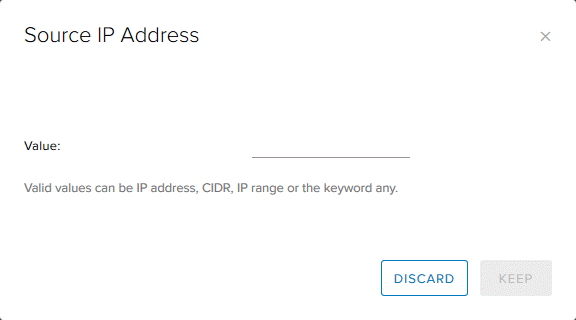
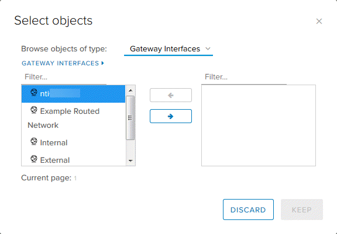
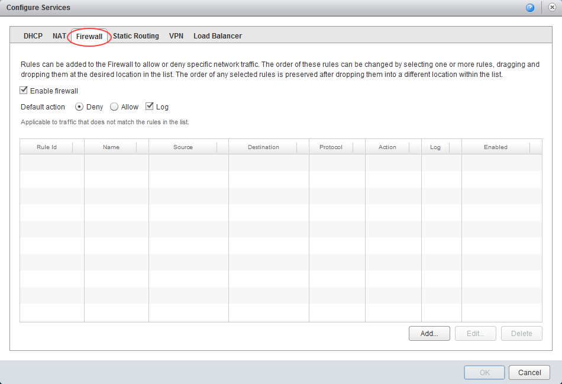
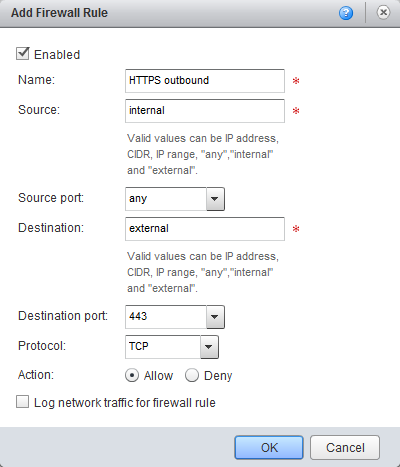
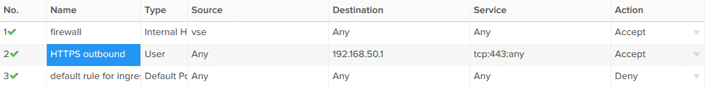
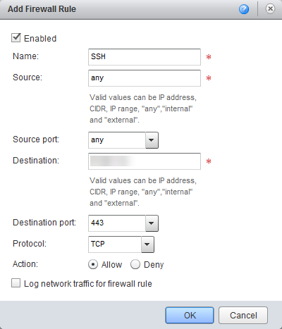

How to create firewall rules
Overview
vCloud Director provides a fully featured layer 3 firewall to control transit from inside to outside security boundaries, and within the various VDC networks you create.
When you specify networks or IP addresses, you can use:
- An individual IP address
- IP ranges separated by a dash (
-) - A CIDR, for example,
192.168.2.0/24 - The keywords
internal,externalorany
The steps for creating firewall rules vary depending on what type of edge gateway you're working with:
Note
We recommend that you convert your edge to an advanced gateway to access the latest vCloud Director functionality. For more information, see How to convert your edge to an advanced gateway.
Note
NAT rules only work if the firewall is enabled. For security reasons, you should ensure that the firewall is always enabled.
Creating firewall rules for an advanced gateway
To create a firewall rule on an advanced gateway:
In vCloud Director, access the edge gateway settings.
For more detailed instructions, see How to access edge gateway settings
Select the Firewall tab.

Click the + button to add a new row to the firewall rules table.

For the New Rule, specify a Name.

In the Source and Destination fields, specify the source and destination addresses for the firewall rule.
To specify an IP address or range, click IP and enter the appropriate Value. When you're done, click Keep.

To specify a group of VMs or IPs, click + and select the desired objects. When you're done, click Keep.

If you're likely to reuse a group of the same source or destination IP addresses in multiple rules, select the Grouping Objects tab and click + to create an IP set. You can then select this IP set in the Select objects dialog box.

In the Service field, click + and, in the Add Service dialog box, specify the Protocol, Source Port and Destination Port for the rule. When you're done, click Keep.

Select whether the rule is an Accept or Deny rule.
Click Save changes.

Creating firewall rules for a standard edge
Note
You can only manage advanced gateways in the new vCloud Director 9.1 tenant portal. If you're working with a standard edge gateway, you must first switch to the vCloud Director web console to manage the edge. For more information, see How to switch to the vCloud Director web console from the tenant portal.
To create a firewall rule on a standard edge:
In vCloud Director, click the Administration tab.

For more detailed instructions, see the Getting Started Guide for UKCloud for VMware
Double-click the virtual data centre (VDC) that you want to work with, or right-click the VDC and select Open.
Select the Edge Gateways tab.

Right-click the edge gateway and select Edge Gateway Services.
Select the Firewall tab.

Click Add.

Give the rule a name and assign a source IP address and source port type. This can be any port or a specific port number.
Add a destination IP address and port, then choose which protocol to assign to the rule.
Select whether to make the rule an Allow or Deny rule, and whether to log the network traffic for this particular rule. (Log viewing is currently not available owing to the multi-tenant nature of the environment. We are working to make this feature available in the future.)
Note
With firewall rules, you are allowing packets through from the external network to the public IP address which is subsequently NAT-ed. A common mistake is to create firewall rules from
externalto an internal Org Network IP address or range.
When you're finished, click OK.
Example
A common use case for a firewall rule is to allow SSH through from the internet. The following example uses allocated public IP addresses.
When your VDC is provisioned in the:
- Assured OFFICIAL platform, you're assigned five public IP addresses
- Elevated OFFICIAL platform, you're assigned three PSN-P IP addresses
In the examples below, the source is any (any IP address within the VDC). The source port is also any. The destination is a public IP address and the destination port is 443 for HTTPS.
Advanced gateway

Standard edge

Next steps
In this article you've learned how to create firewall rules. For other edge gateway configuration tasks, see:
- How to create NAT rules
- How to create a DHCP pool
- How to configure IPsec VPN
- How to configure a load balancer
- How to create a static route
Feedback
If you have any comments on this document or any other aspect of your UKCloud experience, send them to products@ukcloud.com.